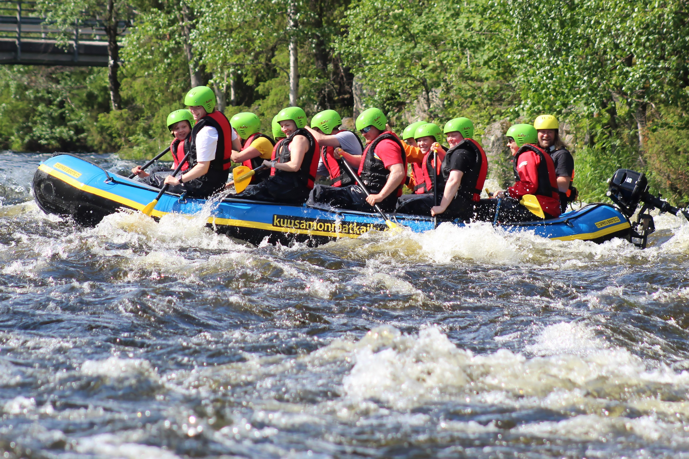
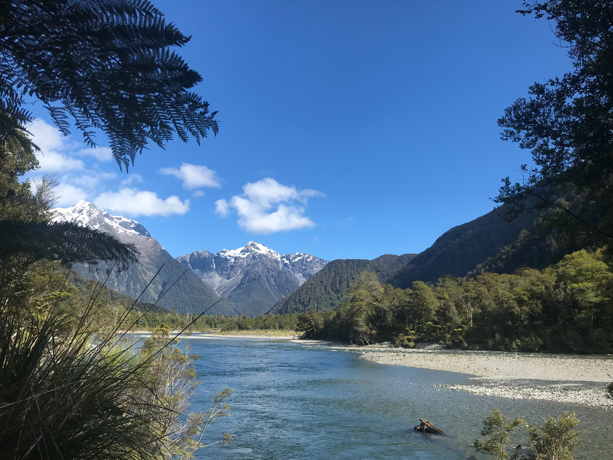

Sub

Why should I plan ahead for my rafting adventure?
For optimal trip arrangements, it is advisable to book your adventure well in advance. If you have specific dates in mind, we recommend securing your spot a year ahead. However, if you have some flexibility, booking six months ahead is usually sufficient.
Is whitewater rafting a safe activity even if I can't swim?
While whitewater rafting involves inherent risks like any adventure sport, we prioritize your safety. Our guides hold certifications in Wilderness First Aid and boast a minimum of three years of rafting experience. The most common injuries occur on land or are sunburn-related. Rest assured, all participants on our commercial rafting trips wear Coast Guard-approved life vests or personal flotation devices (PFDs). We warmly welcome non-swimmers on our trips, and your guide will provide a comprehensive safety briefing before your adventure begins, including instructions on what to do in case you fall out of the raft.
What is included in the trip?
Our package includes all the essential camping gear you'll need. This comprises a sleeping bag, foam pad, waterproof duffle bag, small waterproof day bag, tent, cot, eating utensils, and a camping chair. Throughout the day, we provide water and lemonade, and during morning and evening hours, coffee, tea, and hot chocolate are available. You are welcome to bring reasonable amounts of beer, liquor, and soft drinks (up to two cans per day). Additionally, you'll be provided with three meals per day, along with snacks.
What do you need to bring?
The most recommended items would be: Rain jacket and rain pants (ponchos not recommended), Quick-dry shirts and shorts, Long-sleeve cotton shirt and pants for hot days, Button-down shirts for extra sun protection on the neck, Lightweight cotton pants, nylon pants, or sarong, Swim trunks for men or quick-dry underwear for women, Sport bras and swimsuits for women, Hat with a large brim and good-quality strap, Sunglasses with a strap, Socks for hiking and sun protection, Sandals or water shoes (bring hiking shoes if you're not accustomed to sandals), Comfortable attire for camp, Sleepwear, Water bottle, Small day pack for hikes, Moisturizing lotion, Headlamp or flashlight, Moleskin for blister prevention, Waterproof sunscreen and lip balm, Optional: gloves, fleece jacket, towel, bandana, small pillow Hygiene products: toothpaste, toothbrush, tissue, nail clippers, feminine hygiene products, extra eyeglasses or contacts, biodegradable soap and shampoo, Camera equipment, Book, watercolors, journal, and pen.
What makes whitewater rafting an incredible experience?
Are you ready to hear about the magic of whitewater rafting? Let's dive into a typical day on the river. Imagine waking up in the gentle morning light after spending the night beneath a mesmerizing starry sky. Indulge in a delicious and hearty breakfast, with options like fresh blueberry pancakes or made-to-order omelets. Then, pack your belongings and get ready for a day filled with thrilling rapids, tranquil stretches of water, invigorating hikes, captivating stories, and fascinating insights into history and geology. Throughout the day, you'll be treated to delectable meals, such as succulent steaks, flavorful potatoes, and mouthwatering dutch oven brownies that you'll never forget. As the day winds down, relax by the river with a good book or engaging company, enjoying the company of more stars than you ever imagined. Your guides will be there to regale you with stories before you retire for the night, leaving you with memories that will last a lifetime.
Is this adventure suitable for kids? What are the age restrictions?
Absolutely! Our whitewater rafting trips are designed to delight children of all ages. However, based on our experience, children above the age of 8 tend to enjoy the adventure more (and their parents tend to appreciate it more as well). Some parents express concerns about their children getting bored during extended periods on the boat. Surprisingly, we find that very few children, regardless of age, experience boredom. The areas we traverse during the rafting journey are among the most breathtaking in the world, and there's always something fascinating to discover around each bend. Not to mention the thrill of navigating through exciting rapids. Each raft is accompanied by a knowledgeable guide, who can't resist sharing stories along the way, some of which may even be true!
